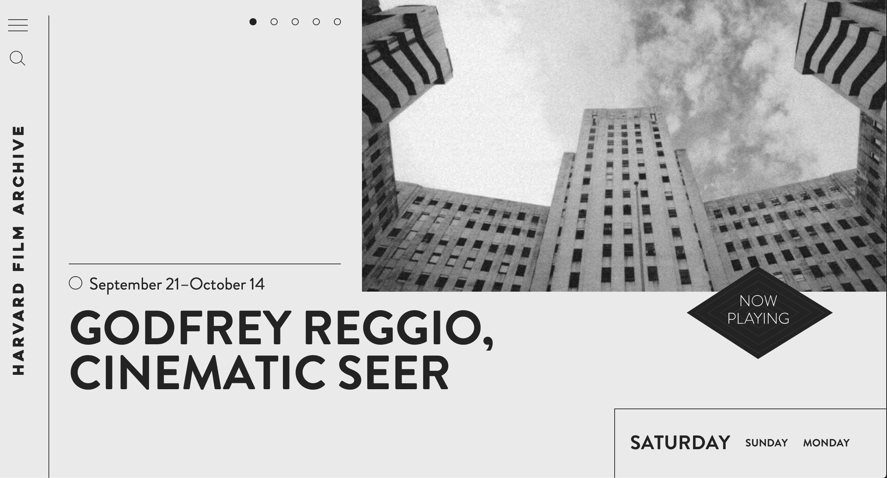

harvard film archive
The Harvard Film Archive has a clean monochrome look that fits perfectly the archiving usage of the site. The website is not over crowded with information which is refreshing coming from a subject that often can lead to that.
The main page of the site is mostly used as a calendar keeping a grid shape that helps to find information easily for the viewer.
While scrolling, the navigation bar stay on the left side vertically placed with the website header positioned vertically as well.
Quas nesciunt aspernatur nihil voluptatum natus, libero, quaerat temporibus unde officia minima voluptatem doloremque! Fuga adipisci dolorem doloremque, hic officia, itaque temporibus odio ipsa, dolores beatae quam delectus minus porro.